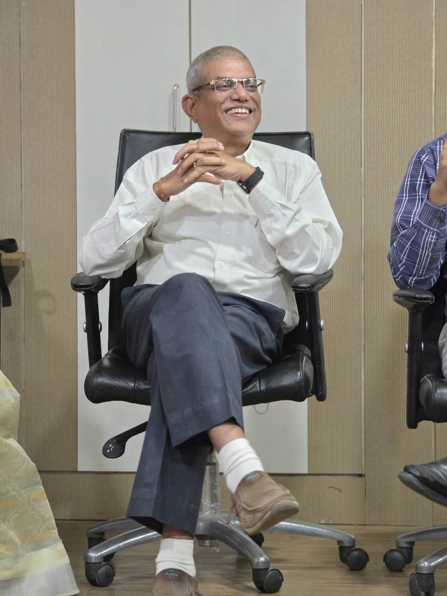
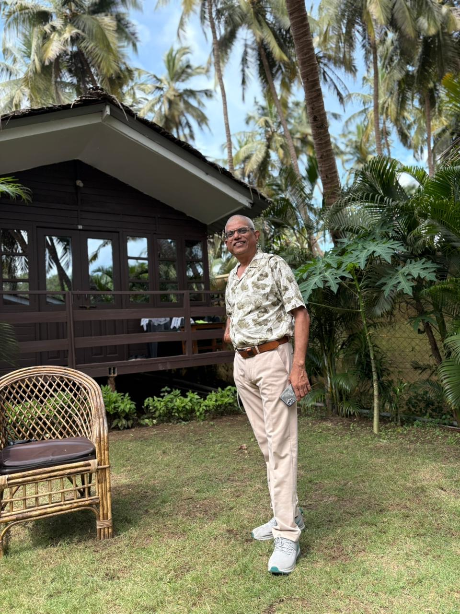

Finance & Administration Professional
Kavayitri Bahinabai Chaudhari North Maharashtra University, Jalgaon
31+ Years of Excellence in Finance & Administration

Personal Profile

| Full Name | Somnath Ranchhoddas Gohil |
|---|---|
| Date of Birth | 17th March 1970 |
| Mobile | 70280 21239 |
| Education | B.Com · GDC&A · MBA (Finance) Pursuing: PhD & LLB |
| Address | "Ranendu", Gat No 94/2B/5, Gajanan Park, Behind Dadawadi Jain Temple, Jalgaon, Maharashtra – 425001 |
| Current Role | Deputy Finance & Accounts Officer KBC North Maharashtra University |
| Experience | 31+ Years (Corporate & Higher Education) |
Career Journey
Over three decades of leadership across corporate and higher education sectors
Finance & Accounts — Senior Executive
Finance & Accounts Professional
Deputy Finance & Accounts Officer
Impact & Contributions
Key contributions driving digital transformation and administrative excellence at KBC NMU
Spearheaded the transition from manual ledger-based accounting to fully digital financial management, eliminating paper-based approvals and enabling real-time financial tracking across all university departments.
Introduced and operationalised an online fee collection system for students across 223 affiliated colleges, reducing cash handling, improving transparency, and enabling instant fee confirmation.
Implemented e-procurement and e-tendering processes in compliance with GFR and state government directives, bringing greater accountability and competitive pricing to university purchases.
Organised capacity-building workshops for finance and administrative staff across affiliated colleges — covering accounting standards, audit compliance, grant utilisation, and digital tools.
Developed robust systems for tracking and utilising grants from UGC, RUSA, and state government — ensuring zero lapse of funds and timely submission of utilisation certificates.
Established a proactive audit compliance system that pre-empts common audit observations, significantly reducing audit paras and improving the university's financial governance rating.
Achievements
Awarded in recognition of outstanding contribution to financial management, administrative excellence, and digital transformation initiatives at KBC North Maharashtra University, Jalgaon.
Appointed by the Hon'ble Governor of Maharashtra as a key officer for the following prestigious inter-university events:
| # | Event Name | Year | Appointing Authority |
|---|---|---|---|
| 1 | Indradhanush — Inter-University Cultural Festival | 2016 | Governor of Maharashtra |
| 2 | Avhan — Inter-University Youth Festival | 2019 | Governor of Maharashtra |
| 3 | Krida Mahotsav — Inter-University Sports Event | 2022 | Governor of Maharashtra |
| 4 | Avhan — Inter-University Youth Festival | 2022 | Governor of Maharashtra |
B.Com · GDC&A · MBA (Finance)
Pursuing PhD & LLB — combining academic depth with professional practice
31+ years across listed corporates (Jain Irrigation, Raymond) and a premier state university — spanning manufacturing, textile, and education sectors
Finance Committee advisor, Governor appointee, audit liaison, and capacity-building leader — with demonstrated ability to drive institutional change
ERP implementation, e-tendering, paperless systems, online payments — aligned with GFR, UGC guidelines, and Maharashtra government financial regulations
Philosophy & Direction
"Finance in higher education is not merely about numbers — it is about enabling knowledge, empowering institutions, and building the infrastructure of tomorrow's India." — Somnath R. Gohil
Establish fully transparent, audit-ready financial systems across all affiliated colleges — enabling real-time fund tracking, zero leakage, and public accountability.
Accelerate the shift to 100% digital financial processes — from fee collection to salary disbursement to grant management — reducing processing times and human error.
Build a region-wide financial literacy network for college administrators, empowering them with knowledge of compliance, grants, and modern accounting practices.
Ensure that scholarship disbursement, fee waivers, and financial assistance schemes reach students faster, fairly, and with minimal bureaucratic friction.
Contact